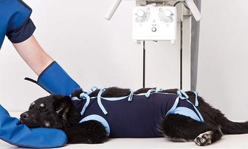

진단부터 수술까지 ON-STOP병원
해마루에서는 영상센터화 수술센터가 함꼐 있기에 MRI촬영 후 바로 디스크 수술이 가능
CT촬영으로 전이 평가를 하고 종양 수술이 ONE-STOP으로
가능합니다.
아울러 대수술 후의 환자를 대상으로 전문적인 집중치료를 할수 있는 시스템 및 시설을 도입하였습니다.

대학병원 수준의 최고사양 장비 보유
대학병원 수준의 장비인 64채널 CT와 1.5 MRI를 보유하고 있어 정확하고 신속한 진단이 가능합니다.
월등히 빠른 촬영으로 노령,중증 질환을 가진 동물들의 마취
시간을 줄여줌으로 빠른 회복을 보장합니다.
CT촬영을 통해 골절, 만성귀질환, 종양, 전이평가, 신경계 질환 등 미세한 질병까지 조기발견 할수있고, 3차원 재구성 영상을 통해 병변을 직관적으로 확인할 수 있습니다.
고양이 특화센터
고양이의 몸짓과 그들만의 언어를 이해하고 고양이와 함께할 수 있는 의료 환경을 제공하기 위해 노력하고 있습니다.
또한 고양이가 안정을 취할 수 있도록 feliway (고양이의 긴장과 스트레스 완화를 도와주는 페로몬) 를 두어 아이들이 조금이나마 긴장을 풀 수 있도록 설계하였습니다.